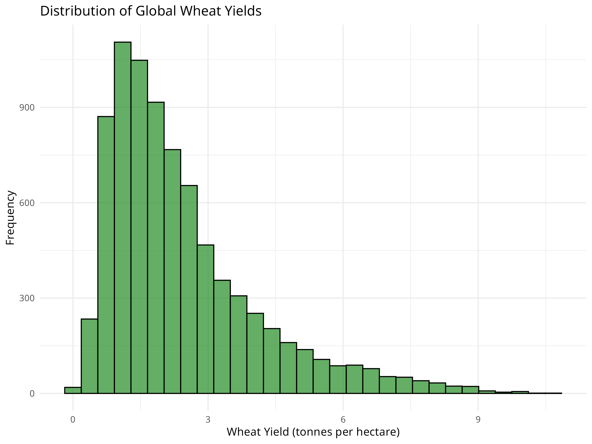
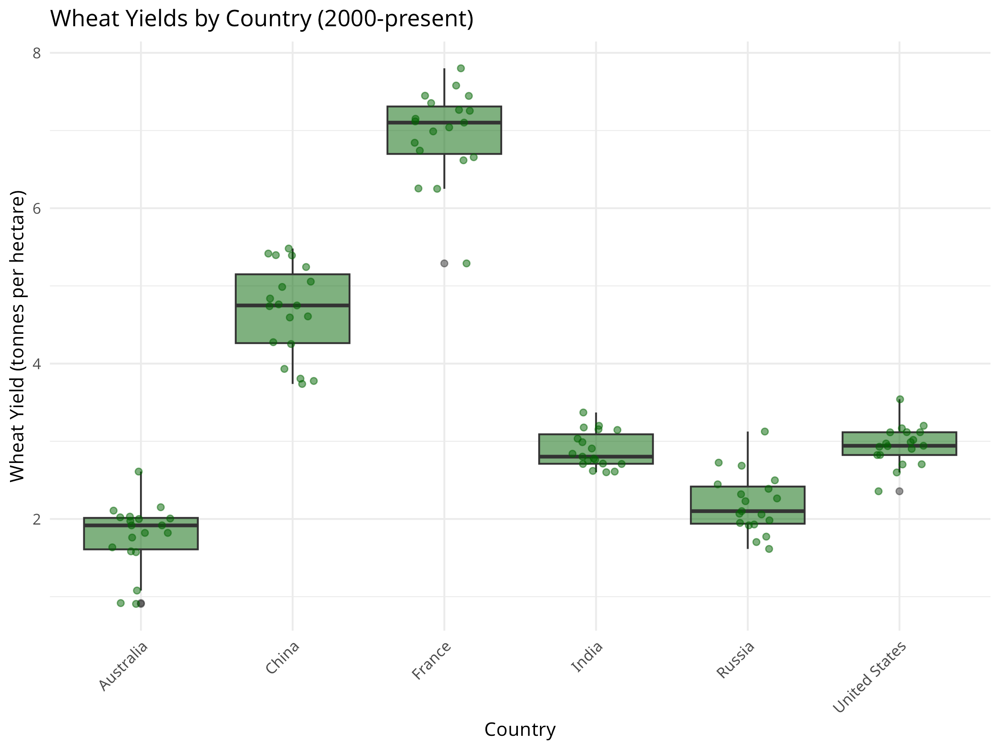
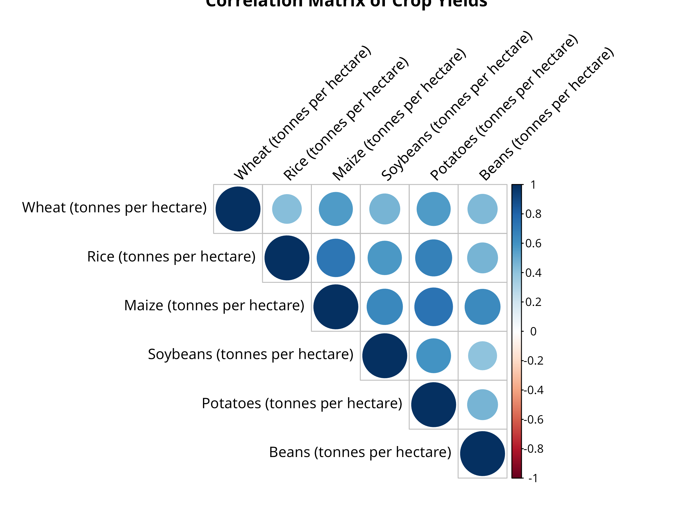
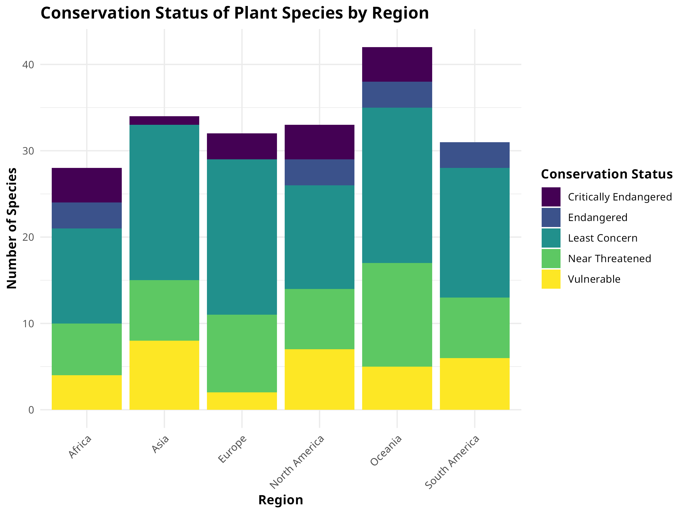

Calculate and interpret descriptive statistics (mean, median, standard deviation)
Create and analyze frequency tables for categorical data
Visualize distributions using histograms, density plots, and box plots
Explore relationships between variables using scatter plots and correlation matrices
Identify outliers and anomalies using statistical methods and visualizations
Analyze missing data patterns and their potential impact
Exploratory Data Analysis (EDA) is a critical first step in any data analysis project. In this chapter, you’ll learn how to systematically explore your data to understand its structure, identify patterns, detect anomalies, and generate hypotheses for further investigation.
3.2 The Purpose of Exploratory Data Analysis
Exploratory Data Analysis serves several important purposes in natural sciences research:
Understanding Data Structure: Gain insights into the basic properties of your dataset
Checking Data Quality: Identify missing values, outliers, and potential errors
Discovering Patterns: Detect relationships, trends, and distributions
Generating Hypotheses: Develop questions and hypotheses for formal testing
Informing Analysis Choices: Guide decisions about appropriate statistical methods
PROFESSIONAL TIP: Creating Reproducible EDA Workflows
To ensure your exploratory data analysis is reproducible and transparent:
Document all data transformations: Record every cleaning step, filter, and transformation applied to raw data
Use R Markdown or Quarto: Create executable documents that combine code, output, and narrative explanation
Version control your analysis: Track changes to your EDA scripts using Git or similar tools
Save exploratory outputs: Store key visualizations and summary statistics in organized directories
Create clear data lineage: Document the origin of each dataset and how it connects to derived datasets
Use consistent naming conventions: Apply systematic naming to files, variables, and functions
Separate exploration from confirmation: Clearly distinguish exploratory analyses from confirmatory hypothesis testing
Include data validation checks: Incorporate automated checks for data integrity and quality
Provide detailed method documentation: Document statistical approaches like ANOVA types (e.g., Type II tests for unbalanced designs)
Share your EDA code: Make your exploratory scripts available alongside final analyses for complete transparency
3.3 Summarizing Data
3.3.1 Descriptive Statistics
Descriptive statistics provide a concise summary of your data’s central tendency, dispersion, and shape:
Code
# Load necessary librarieslibrary(tidyverse)# Load the crop yield datasetcrop_yields<-read_csv("../data/agriculture/crop_yields.csv")# View the first few rowshead(crop_yields)#> # A tibble: 6 × 14#> Entity Code Year `Wheat (tonnes per hectare)` Rice (tonnes per hectar…¹#> <chr> <chr> <dbl> <dbl> <dbl>#> 1 Afghanistan AFG 1961 1.02 1.52#> 2 Afghanistan AFG 1962 0.974 1.52#> 3 Afghanistan AFG 1963 0.832 1.52#> 4 Afghanistan AFG 1964 0.951 1.73#> 5 Afghanistan AFG 1965 0.972 1.73#> 6 Afghanistan AFG 1966 0.867 1.52#> # ℹ abbreviated name: ¹`Rice (tonnes per hectare)`#> # ℹ 9 more variables: `Maize (tonnes per hectare)` <dbl>,#> # `Soybeans (tonnes per hectare)` <dbl>,#> # `Potatoes (tonnes per hectare)` <dbl>, `Beans (tonnes per hectare)` <dbl>,#> # `Peas (tonnes per hectare)` <dbl>, `Cassava (tonnes per hectare)` <dbl>,#> # `Barley (tonnes per hectare)` <dbl>,#> # `Cocoa beans (tonnes per hectare)` <dbl>, …# Get summary statistics for wheat yieldswheat_summary<-crop_yields%>%filter(!is.na(`Wheat (tonnes per hectare)`))%>%summarize( Mean =mean(`Wheat (tonnes per hectare)`, na.rm =TRUE), Median =median(`Wheat (tonnes per hectare)`, na.rm =TRUE), StdDev =sd(`Wheat (tonnes per hectare)`, na.rm =TRUE), Min =min(`Wheat (tonnes per hectare)`, na.rm =TRUE), Max =max(`Wheat (tonnes per hectare)`, na.rm =TRUE), Q1 =quantile(`Wheat (tonnes per hectare)`, 0.25, na.rm =TRUE), Q3 =quantile(`Wheat (tonnes per hectare)`, 0.75, na.rm =TRUE))# Display the summary statisticsknitr::kable(wheat_summary, caption ="Summary Statistics for Global Wheat Yields")
Summary Statistics for Global Wheat Yields
Mean
Median
StdDev
Min
Max
Q1
Q3
2.434914
1.99
1.687949
0
10.6677
1.228
3.1245
Figure 3.1: Distribution of global wheat yields
Code
# Visualize the distribution of wheat yieldsggplot(crop_yields, aes(x =`Wheat (tonnes per hectare)`))+geom_histogram(bins =30, fill ="forestgreen", color ="black", alpha =0.7)+labs(title ="Distribution of Global Wheat Yields", x ="Wheat Yield (tonnes per hectare)", y ="Frequency")+theme_minimal()# Identify top wheat-producing countries (by average yield)top_wheat_countries<-crop_yields%>%filter(!is.na(`Wheat (tonnes per hectare)`))%>%group_by(Entity)%>%summarize(Avg_Yield =mean(`Wheat (tonnes per hectare)`, na.rm =TRUE))%>%arrange(desc(Avg_Yield))%>%head(10)# Display the top countriesknitr::kable(top_wheat_countries, caption ="Top 10 Countries by Average Wheat Yield")
Top 10 Countries by Average Wheat Yield
Entity
Avg_Yield
Belgium
8.544200
Netherlands
7.030172
Ireland
6.829840
United Kingdom
6.366400
Denmark
6.175285
Luxembourg
5.977411
Germany
5.893978
Europe, Western
5.723267
France
5.645341
Northern Europe
5.589988
Figure 3.2: Distribution of global wheat yields

Figure 3.3: Distribution of global wheat yields
Code Explanation
This code block demonstrates how to calculate and visualize descriptive statistics:
library(tidyverse) loads the tidyverse collection of packages for data manipulation and visualization.
read_csv() imports the crop yields dataset from a CSV file.
head() displays the first few rows to inspect the data structure.
The summarize() function calculates key statistics for wheat yields:
Mean: Average yield across all observations
Median: Middle value when yields are arranged in order
StdDev: Standard deviation, measuring data dispersion
Min/Max: Minimum and maximum values in the dataset
Q1/Q3: First and third quartiles (25th and 75th percentiles)
knitr::kable() creates a formatted table of the summary statistics.
summarize() to calculate average yield per country
arrange(desc()) to sort in descending order
head(10) to select the top 10 entries
Results Interpretation
The summary statistics reveal several key insights about global wheat yields:
The mean wheat yield is higher than the median, suggesting a right-skewed distribution with some countries achieving exceptionally high yields.
The standard deviation indicates substantial variability in wheat productivity across different regions.
The histogram confirms this skewed distribution, with most countries clustered at lower to moderate yield levels, and fewer countries achieving very high yields.
The top 10 countries table shows which nations have the most productive wheat cultivation systems, likely due to advanced agricultural practices, favorable climate conditions, or intensive farming methods.
This analysis provides a foundation for investigating factors that contribute to high wheat yields and potential strategies for improving agricultural productivity in lower-yielding regions.
3.3.2 Frequency Tables
Frequency tables are useful for understanding the distribution of categorical variables:
Code
# Let's create a categorical variable based on wheat yield levelscrop_yields_with_categories<-crop_yields%>%filter(!is.na(`Wheat (tonnes per hectare)`))%>%mutate(yield_category =case_when(`Wheat (tonnes per hectare)`<2~"Low",`Wheat (tonnes per hectare)`>=2&`Wheat (tonnes per hectare)`<4~"Medium",`Wheat (tonnes per hectare)`>=4~"High"))# Frequency table for yield categoriestable(crop_yields_with_categories$yield_category)#> #> High Low Medium #> 1279 4081 2741# Proportionsprop.table(table(crop_yields_with_categories$yield_category))#> #> High Low Medium #> 0.1578817 0.5037650 0.3383533# Create a decade variable for temporal analysiscrop_yields_with_categories<-crop_yields_with_categories%>%mutate(decade =floor(Year/10)*10)# Two-way frequency table: yield category by decadeyield_decade_table<-table(crop_yields_with_categories$yield_category,crop_yields_with_categories$decade)yield_decade_table#> #> 1960 1970 1980 1990 2000 2010#> High 34 102 200 261 326 356#> Low 838 833 760 681 563 406#> Medium 239 335 344 550 656 617# Convert to proportions (by row)prop.table(yield_decade_table, margin =1)#> #> 1960 1970 1980 1990 2000 2010#> High 0.02658327 0.07974980 0.15637217 0.20406568 0.25488663 0.27834246#> Low 0.20534183 0.20411664 0.18622887 0.16687086 0.13795638 0.09948542#> Medium 0.08719445 0.12221817 0.12550164 0.20065669 0.23932871 0.22510033
Code Explanation
This code block demonstrates how to create and analyze frequency tables:
mutate() with case_when() creates a new categorical variable yield_category by binning wheat yields into “Low,” “Medium,” and “High” categories.
table() produces a frequency count for each yield category.
prop.table() converts the frequency counts to proportions (relative frequencies).
A new variable decade is created by rounding down the year to the nearest decade using floor(Year / 10) * 10.
A two-way frequency table is created to examine the relationship between yield categories and decades.
prop.table(yield_decade_table, margin = 1) calculates row proportions, showing the distribution of decades within each yield category.
Results Interpretation
The frequency tables reveal important patterns in wheat yield categories:
The distribution of yield categories shows which productivity levels are most common globally.
The proportions table quantifies this distribution, indicating what percentage of observations fall into each yield category.
The two-way table between yield categories and decades allows us to track how wheat productivity has changed over time.
The row proportions reveal whether certain yield categories have become more or less common in different decades, potentially indicating technological improvements, climate effects, or changes in agricultural practices.
These temporal patterns are crucial for understanding agricultural development trends and projecting future food security scenarios.
3.3.3 Box Plots
Box plots are excellent for comparing distributions across groups:
Code
# Select a few major countries for comparisonmajor_wheat_producers<-c("United States", "China", "India", "Russia", "France", "Australia")# Filter data for these countries and recent yearsrecent_wheat_data<-crop_yields%>%filter(Entity%in%major_wheat_producers,Year>=2000,!is.na(`Wheat (tonnes per hectare)`))# Box plot of wheat yields by countryggplot(recent_wheat_data, aes(x =Entity, y =`Wheat (tonnes per hectare)`))+geom_boxplot(fill ="darkgreen", alpha =0.7)+labs(title ="Wheat Yields by Country (2000-present)", x ="Country", y ="Wheat Yield (tonnes per hectare)")+theme_minimal()+theme(axis.text.x =element_text(angle =45, hjust =1))# Enhanced box plot with jittered pointsggplot(recent_wheat_data, aes(x =Entity, y =`Wheat (tonnes per hectare)`))+geom_boxplot(fill ="darkgreen", alpha =0.5)+geom_jitter(width =0.2, alpha =0.5, color ="darkgreen")+labs(title ="Wheat Yields by Country (2000-present)", x ="Country", y ="Wheat Yield (tonnes per hectare)")+theme_minimal()+theme(axis.text.x =element_text(angle =45, hjust =1))
Figure 3.4: Wheat yields by country

Figure 3.5: Enhanced boxplot with data points
Code Explanation
This code demonstrates how to create and enhance box plots for comparing distributions:
First, we select major wheat-producing countries for comparison and filter for recent data (since 2000).
The basic box plot:
geom_boxplot() creates a box-and-whisker plot for each country
Each box shows the median (middle line), interquartile range (IQR, the box), and whiskers extending to 1.5 × IQR
Points beyond the whiskers represent outliers
The enhanced box plot adds:
geom_jitter() to display individual data points with slight horizontal displacement
This combination shows both the summary statistics (box plot) and the raw data distribution (points)
angle = 45, hjust = 1 rotates country labels for better readability
Results Interpretation
The box plots reveal important comparisons between major wheat-producing countries:
The median line in each box shows the typical yield for each country, allowing direct comparison of central tendency.
The height of each box (IQR) indicates the variability of yields within each country over the time period.
Whisker length reflects the range of typical yields, while outlier points show exceptional years.
Countries with higher boxes generally have more variable production, possibly due to climate fluctuations or changing agricultural practices.
The jittered points reveal the actual distribution and density of observations for each country.
These comparisons help identify which countries have the most consistent and productive wheat cultivation systems, providing insights for agricultural policy and development.
3.3.4 Bar Charts
Bar charts are useful for visualizing categorical data:
Code
# Calculate average wheat yield by country for the last decaderecent_avg_yields<-crop_yields%>%filter(Year>=2010, !is.na(`Wheat (tonnes per hectare)`))%>%group_by(Entity)%>%summarize(avg_wheat_yield =mean(`Wheat (tonnes per hectare)`, na.rm =TRUE))%>%arrange(desc(avg_wheat_yield))%>%head(10)# Top 10 countries# Bar chart of average wheat yieldsggplot(recent_avg_yields, aes(x =reorder(Entity, avg_wheat_yield), y =avg_wheat_yield))+geom_bar(stat ="identity", fill ="darkgreen")+labs(title ="Top 10 Countries by Average Wheat Yield (2010-present)", x ="Country", y ="Average Wheat Yield (tonnes per hectare)")+theme_minimal()+theme(axis.text.x =element_text(angle =45, hjust =1))
Figure 3.6: Top 10 countries by average wheat yield (2010-present)
Code Explanation
This code demonstrates how to create a bar chart for visualizing categorical data:
First, we calculate the average wheat yield by country for the last decade (2010-present).
We then select the top 10 countries by average yield.
The bar chart:
geom_bar(stat = "identity") creates a bar for each country, with height proportional to average yield
reorder(Entity, avg_wheat_yield) sorts the countries by average yield in descending order
fill = "darkgreen" sets the bar color
theme(axis.text.x = element_text(angle = 45, hjust = 1)) rotates country labels for better readability
Results Interpretation
The bar chart reveals the top 10 countries by average wheat yield:
The height of each bar represents the average yield for each country.
The countries are sorted in descending order by average yield, making it easy to identify the most productive nations.
This visualization helps identify which countries have the most efficient wheat cultivation systems, providing insights for agricultural policy and development.
The bar chart can also be used to compare the average yields of different countries, helping to identify potential areas for improvement.
3.4 Visualizing Distributions
3.4.1 Histograms and Density Plots
Histograms and density plots help visualize the distribution of continuous variables:
Code
# Histogram of wheat yieldsggplot(crop_yields, aes(x =`Wheat (tonnes per hectare)`))+geom_histogram(bins =30, fill ="darkgreen", color ="white", na.rm =TRUE)+labs(title ="Histogram of Wheat Yields", x ="Wheat Yield (tonnes per hectare)", y ="Frequency")+theme_minimal()# Density plotggplot(crop_yields, aes(x =`Wheat (tonnes per hectare)`))+geom_density(fill ="darkgreen", alpha =0.5, na.rm =TRUE)+labs(title ="Density Plot of Wheat Yields", x ="Wheat Yield (tonnes per hectare)", y ="Density")+theme_minimal()# Histogram with density overlayggplot(crop_yields, aes(x =`Wheat (tonnes per hectare)`))+geom_histogram(aes(y =after_stat(density)), bins =30, fill ="darkgreen", color ="white", na.rm =TRUE)+geom_density(color ="darkgreen", linewidth =1, na.rm =TRUE)+labs(title ="Distribution of Wheat Yields", x ="Wheat Yield (tonnes per hectare)", y ="Density")+theme_minimal()
Figure 3.7: Histogram of wheat yields
Figure 3.8: Density plot of wheat yields
Figure 3.9: Combined histogram with density overlay
Code Explanation
This code demonstrates three approaches to visualizing distributions:
Histogram:
geom_histogram() divides the data into bins and counts observations in each bin
bins = 30 specifies the number of divisions
na.rm = TRUE removes missing values from the visualization
Density Plot:
geom_density() creates a smoothed representation of the distribution
fill and alpha control the appearance and transparency
Density plots show the probability density function of the data
Combined Visualization:
The histogram is converted to density scale with aes(y = after_stat(density))
geom_density() overlays a smoothed curve on the histogram
This combination shows both the raw data structure and the smoothed distribution
Results Interpretation
These distribution visualizations reveal key patterns in wheat yields:
The histogram shows the frequency of observations at different yield levels, highlighting where most countries cluster.
The density plot smooths the distribution, making it easier to identify the central tendency and spread.
The combined plot allows us to see both the actual data distribution (histogram) and the underlying probability density (curve).
The right-skewed shape indicates that while most countries have moderate yields, a few achieve exceptionally high productivity.
Multiple peaks (if present) might suggest distinct groups of countries with different agricultural technologies or growing conditions.
These visualizations help identify outliers and understand the overall pattern of global wheat production efficiency.
3.4.2 Box Plots
Box plots are excellent for comparing distributions across groups:
Code
# Select a few major countries for comparisonmajor_wheat_producers<-c("United States", "China", "India", "Russia", "France", "Australia")# Filter data for these countries and recent yearsrecent_wheat_data<-crop_yields%>%filter(Entity%in%major_wheat_producers,Year>=2000,!is.na(`Wheat (tonnes per hectare)`))# Box plot of wheat yields by countryggplot(recent_wheat_data, aes(x =Entity, y =`Wheat (tonnes per hectare)`))+geom_boxplot(fill ="darkgreen", alpha =0.7)+labs(title ="Wheat Yields by Country (2000-present)", x ="Country", y ="Wheat Yield (tonnes per hectare)")+theme_minimal()+theme(axis.text.x =element_text(angle =45, hjust =1))# Enhanced box plot with jittered pointsggplot(recent_wheat_data, aes(x =Entity, y =`Wheat (tonnes per hectare)`))+geom_boxplot(fill ="darkgreen", alpha =0.5)+geom_jitter(width =0.2, alpha =0.5, color ="darkgreen")+labs(title ="Wheat Yields by Country (2000-present)", x ="Country", y ="Wheat Yield (tonnes per hectare)")+theme_minimal()+theme(axis.text.x =element_text(angle =45, hjust =1))
Figure 3.10: Country comparison boxplot
Figure 3.11: Boxplot with jittered observations
Code Explanation
This code demonstrates how to create and enhance box plots for comparing distributions:
First, we select major wheat-producing countries for comparison and filter for recent data (since 2000).
The basic box plot:
geom_boxplot() creates a box-and-whisker plot for each country
Each box shows the median (middle line), interquartile range (IQR, the box), and whiskers extending to 1.5 × IQR
Points beyond the whiskers represent outliers
The enhanced box plot adds:
geom_jitter() to display individual data points with slight horizontal displacement
This combination shows both the summary statistics (box plot) and the raw data distribution (points)
angle = 45, hjust = 1 rotates country labels for better readability
Results Interpretation
The box plots reveal important comparisons between major wheat-producing countries:
The median line in each box shows the typical yield for each country, allowing direct comparison of central tendency.
The height of each box (IQR) indicates the variability of yields within each country over the time period.
Whisker length reflects the range of typical yields, while outlier points show exceptional years.
Countries with higher boxes generally have more variable production, possibly due to climate fluctuations or changing agricultural practices.
The jittered points reveal the actual distribution and density of observations for each country.
These comparisons help identify which countries have the most consistent and productive wheat cultivation systems, providing insights for agricultural policy and development.
3.4.3 Bar Charts
Bar charts are useful for visualizing categorical data:
Code
# Calculate average wheat yield by country for the last decaderecent_avg_yields<-crop_yields%>%filter(Year>=2010, !is.na(`Wheat (tonnes per hectare)`))%>%group_by(Entity)%>%summarize(avg_wheat_yield =mean(`Wheat (tonnes per hectare)`, na.rm =TRUE))%>%arrange(desc(avg_wheat_yield))%>%head(10)# Top 10 countries# Bar chart of average wheat yieldsggplot(recent_avg_yields, aes(x =reorder(Entity, avg_wheat_yield), y =avg_wheat_yield))+geom_bar(stat ="identity", fill ="darkgreen")+labs(title ="Top 10 Countries by Average Wheat Yield (2010-present)", x ="Country", y ="Average Wheat Yield (tonnes per hectare)")+theme_minimal()+theme(axis.text.x =element_text(angle =45, hjust =1))
Figure 3.12: Top 10 countries by average wheat yield
Code Explanation
This code demonstrates how to create a bar chart for visualizing categorical data:
First, we calculate the average wheat yield by country for the last decade (2010-present).
We then select the top 10 countries by average yield.
The bar chart:
geom_bar(stat = "identity") creates a bar for each country, with height proportional to average yield
reorder(Entity, avg_wheat_yield) sorts the countries by average yield in descending order
fill = "darkgreen" sets the bar color
theme(axis.text.x = element_text(angle = 45, hjust = 1)) rotates country labels for better readability
Results Interpretation
The bar chart reveals the top 10 countries by average wheat yield:
The height of each bar represents the average yield for each country.
The countries are sorted in descending order by average yield, making it easy to identify the most productive nations.
This visualization helps identify which countries have the most efficient wheat cultivation systems, providing insights for agricultural policy and development.
The bar chart can also be used to compare the average yields of different countries, helping to identify potential areas for improvement.
3.5 Exploring Relationships
3.5.1 Scatter Plots
Scatter plots help visualize relationships between two continuous variables:
Code
# Let's compare wheat and rice yieldscrop_yields_filtered<-crop_yields%>%filter(!is.na(`Wheat (tonnes per hectare)`), !is.na(`Rice (tonnes per hectare)`))%>%filter(Year>=2000)# Basic scatter plotggplot(crop_yields_filtered, aes(x =`Wheat (tonnes per hectare)`, y =`Rice (tonnes per hectare)`))+geom_point(alpha =0.5, color ="darkgreen")+labs(title ="Relationship between Wheat and Rice Yields", x ="Wheat Yield (tonnes per hectare)", y ="Rice Yield (tonnes per hectare)")+theme_minimal()# Scatter plot with color by continent (we'll need to add continent information)# For demonstration, let's create a simple mapping for a few countriescontinent_mapping<-tibble( Entity =c("United States", "Canada", "Mexico","China", "India", "Japan","Germany", "France", "United Kingdom","Brazil", "Argentina", "Chile","Egypt", "Nigeria", "South Africa","Australia", "New Zealand"), Continent =c(rep("North America", 3),rep("Asia", 3),rep("Europe", 3),rep("South America", 3),rep("Africa", 3),rep("Oceania", 2)))# Join with our datasetcrop_yields_with_continent<-crop_yields_filtered%>%inner_join(continent_mapping, by ="Entity")# Scatter plot with color by continentggplot(crop_yields_with_continent, aes(x =`Wheat (tonnes per hectare)`, y =`Rice (tonnes per hectare)`, color =Continent))+geom_point(size =3, alpha =0.7)+labs(title ="Relationship between Wheat and Rice Yields by Continent", x ="Wheat Yield (tonnes per hectare)", y ="Rice Yield (tonnes per hectare)")+theme_minimal()
Figure 3.13: Relationship between wheat and rice yields
Figure 3.14: Wheat vs rice yields by continent
Code Explanation
This code demonstrates how to create scatter plots for exploring relationships:
First, we filter the data to include only observations with non-missing values for wheat and rice yields, and only consider recent data (since 2000).
The basic scatter plot:
geom_point() creates a scatter plot of wheat yields vs. rice yields
alpha = 0.5 sets the transparency of the points
color = "darkgreen" sets the color of the points
The scatter plot with color by continent:
We create a simple mapping of countries to continents using tibble().
We join this mapping with our dataset using inner_join().
We create a scatter plot with color by continent using geom_point(aes(color = Continent)).
Results Interpretation
The scatter plots reveal the relationship between wheat and rice yields:
The basic scatter plot shows the overall relationship between wheat and rice yields.
The scatter plot with color by continent reveals how the relationship varies across different continents.
This visualization helps identify patterns and correlations between wheat and rice yields, providing insights for agricultural policy and development.
The scatter plot can also be used to identify outliers and anomalies in the data.
3.5.2 Correlation Analysis
Correlation analysis quantifies the strength and direction of relationships between variables:
Code
# Select numeric columns for correlation analysiscrop_numeric<-crop_yields%>%select(`Wheat (tonnes per hectare)`, `Rice (tonnes per hectare)`, `Maize (tonnes per hectare)`, `Soybeans (tonnes per hectare)`, `Potatoes (tonnes per hectare)`, `Beans (tonnes per hectare)`)%>%na.omit()# Correlation matrixcor_matrix<-cor(crop_numeric)round(cor_matrix, 2)#> Wheat (tonnes per hectare)#> Wheat (tonnes per hectare) 1.00#> Rice (tonnes per hectare) 0.43#> Maize (tonnes per hectare) 0.57#> Soybeans (tonnes per hectare) 0.47#> Potatoes (tonnes per hectare) 0.57#> Beans (tonnes per hectare) 0.44#> Rice (tonnes per hectare)#> Wheat (tonnes per hectare) 0.43#> Rice (tonnes per hectare) 1.00#> Maize (tonnes per hectare) 0.73#> Soybeans (tonnes per hectare) 0.58#> Potatoes (tonnes per hectare) 0.67#> Beans (tonnes per hectare) 0.46#> Maize (tonnes per hectare)#> Wheat (tonnes per hectare) 0.57#> Rice (tonnes per hectare) 0.73#> Maize (tonnes per hectare) 1.00#> Soybeans (tonnes per hectare) 0.65#> Potatoes (tonnes per hectare) 0.74#> Beans (tonnes per hectare) 0.63#> Soybeans (tonnes per hectare)#> Wheat (tonnes per hectare) 0.47#> Rice (tonnes per hectare) 0.58#> Maize (tonnes per hectare) 0.65#> Soybeans (tonnes per hectare) 1.00#> Potatoes (tonnes per hectare) 0.59#> Beans (tonnes per hectare) 0.41#> Potatoes (tonnes per hectare)#> Wheat (tonnes per hectare) 0.57#> Rice (tonnes per hectare) 0.67#> Maize (tonnes per hectare) 0.74#> Soybeans (tonnes per hectare) 0.59#> Potatoes (tonnes per hectare) 1.00#> Beans (tonnes per hectare) 0.46#> Beans (tonnes per hectare)#> Wheat (tonnes per hectare) 0.44#> Rice (tonnes per hectare) 0.46#> Maize (tonnes per hectare) 0.63#> Soybeans (tonnes per hectare) 0.41#> Potatoes (tonnes per hectare) 0.46#> Beans (tonnes per hectare) 1.00# Visualize correlation matrixlibrary(corrplot)corrplot(cor_matrix, method ="circle", type ="upper", tl.col ="black", tl.srt =45, title ="Correlation Matrix of Crop Yields")

Figure 3.15: Correlation matrix of crop yields
Code Explanation
This code demonstrates how to perform correlation analysis:
First, we select the numeric columns of interest for correlation analysis.
We round the correlation matrix to 2 decimal places using round().
We visualize the correlation matrix using corrplot().
Results Interpretation
The correlation matrix reveals the strength and direction of relationships between variables:
The correlation matrix shows the correlation coefficients between each pair of variables.
The correlation coefficients range from -1 (perfect negative correlation) to 1 (perfect positive correlation).
This visualization helps identify strong correlations between variables, providing insights for agricultural policy and development.
The correlation matrix can also be used to identify potential multicollinearity issues in regression analysis.
3.5.3 Pair Plots
Pair plots provide a comprehensive view of relationships between multiple variables:
Code
# Basic pair plotpairs(crop_numeric, pch =19, col ="darkgreen")# Enhanced pair plot with GGallylibrary(GGally)ggpairs(crop_numeric)+theme_minimal()+labs(title ="Relationships Between Different Crop Yields")
We then create an enhanced pair plot using ggpairs() from the GGally package.
The enhanced pair plot includes histograms, scatter plots, and correlation coefficients for each pair of variables.
Results Interpretation
The pair plots reveal the relationships between multiple variables:
The pair plots show the relationships between each pair of variables.
The histograms and scatter plots provide a visual representation of the relationships.
The correlation coefficients provide a quantitative measure of the strength and direction of the relationships.
This visualization helps identify patterns and correlations between multiple variables, providing insights for agricultural policy and development.
3.6 Identifying Outliers and Anomalies
3.6.1 Box Plots for Outlier Detection
Box plots can help identify potential outliers:
Code
# Box plot to identify outliers in wheat yieldggplot(crop_yields, aes(y =`Wheat (tonnes per hectare)`))+geom_boxplot(fill ="darkgreen", alpha =0.7, na.rm =TRUE)+labs(title ="Box Plot of Wheat Yields with Potential Outliers", y ="Wheat Yield (tonnes per hectare)")+theme_minimal()# Identify potential outlierswheat_outliers<-crop_yields%>%filter(!is.na(`Wheat (tonnes per hectare)`))%>%mutate( q1 =quantile(`Wheat (tonnes per hectare)`, 0.25), q3 =quantile(`Wheat (tonnes per hectare)`, 0.75), iqr =q3-q1, lower_bound =q1-1.5*iqr, upper_bound =q3+1.5*iqr, is_outlier =`Wheat (tonnes per hectare)`<lower_bound|`Wheat (tonnes per hectare)`>upper_bound)%>%filter(is_outlier)%>%select(Entity, Year, `Wheat (tonnes per hectare)`)# Display the outliershead(wheat_outliers, 10)#> # A tibble: 10 × 3#> Entity Year `Wheat (tonnes per hectare)`#> <chr> <dbl> <dbl>#> 1 Austria 2016 6.25#> 2 Belgium 2000 7.92#> 3 Belgium 2001 8.05#> 4 Belgium 2002 8.28#> 5 Belgium 2003 8.58#> 6 Belgium 2004 8.98#> 7 Belgium 2005 8.27#> 8 Belgium 2006 8.25#> 9 Belgium 2007 7.89#> 10 Belgium 2008 8.76
Figure 3.18: Box plot showing potential outliers in wheat yields
Code Explanation
This code demonstrates how to use box plots for outlier detection:
First, we create a box plot of wheat yields using geom_boxplot().
We then identify potential outliers using the interquartile range (IQR) method.
We calculate the lower and upper bounds for outliers using q1 - 1.5 * iqr and q3 + 1.5 * iqr, respectively.
We identify observations that fall outside these bounds as potential outliers.
Results Interpretation
The box plot and outlier detection reveal potential outliers:
The box plot shows the distribution of wheat yields, with potential outliers indicated by points outside the whiskers.
The outlier detection identifies observations that fall outside the lower and upper bounds.
This visualization helps identify potential errors or anomalies in the data, providing insights for data cleaning and quality control.
3.6.2 Z-Scores for Outlier Detection
Z-scores can also help identify outliers:
Code
# Calculate z-scores for wheat yieldswheat_z_scores<-crop_yields%>%filter(!is.na(`Wheat (tonnes per hectare)`))%>%mutate( wheat_mean =mean(`Wheat (tonnes per hectare)`), wheat_sd =sd(`Wheat (tonnes per hectare)`), z_score =(`Wheat (tonnes per hectare)`-wheat_mean)/wheat_sd, is_extreme =abs(z_score)>3)# Display extreme values (z-score > 3 or < -3)wheat_extremes<-wheat_z_scores%>%filter(is_extreme)%>%select(Entity, Year, `Wheat (tonnes per hectare)`, z_score)%>%arrange(desc(abs(z_score)))head(wheat_extremes, 10)#> # A tibble: 10 × 4#> Entity Year `Wheat (tonnes per hectare)` z_score#> <chr> <dbl> <dbl> <dbl>#> 1 Ireland 2015 10.7 4.88#> 2 Ireland 2017 10.2 4.58#> 3 Belgium 2015 10.0 4.49#> 4 Ireland 2014 10.0 4.49#> 5 Zambia 2008 9.94 4.45#> 6 Ireland 2004 9.92 4.44#> 7 New Zealand 2017 9.86 4.40#> 8 Ireland 2011 9.86 4.40#> 9 Ireland 2016 9.54 4.21#> 10 Belgium 2009 9.47 4.16
Code Explanation
This code demonstrates how to use z-scores for outlier detection:
First, we calculate the mean and standard deviation of wheat yields using mean() and sd(), respectively.
We then calculate the z-scores for each observation using (x - mean) / sd.
We identify observations with absolute z-scores greater than 3 as extreme values.
Results Interpretation
The z-scores reveal extreme values:
The z-scores show the number of standard deviations from the mean for each observation.
The extreme values are identified by their absolute z-scores greater than 3.
This visualization helps identify potential outliers or anomalies in the data, providing insights for data cleaning and quality control.
3.7 Time Series Exploration
Agricultural data often contains important temporal patterns:
Code
# Select a few countries for time series analysiscountries_for_ts<-c("United States", "China", "India", "France")# Filter data for these countrieswheat_ts_data<-crop_yields%>%filter(Entity%in%countries_for_ts, !is.na(`Wheat (tonnes per hectare)`))%>%filter(Year>=1960)# Time series plotggplot(wheat_ts_data, aes(x =Year, y =`Wheat (tonnes per hectare)`, color =Entity))+geom_line(linewidth =1)+geom_point(size =2)+labs(title ="Wheat Yield Trends Over Time", x ="Year", y ="Wheat Yield (tonnes per hectare)")+theme_minimal()+scale_color_brewer(palette ="Dark2")
Figure 3.19: Wheat yield trends over time for major producers
Code Explanation
This code demonstrates how to create a time series plot:
First, we select a few countries for time series analysis.
We filter the data for these countries and non-missing wheat yields.
We add a title, x-axis label, and y-axis label using labs().
Results Interpretation
The time series plot reveals temporal patterns:
The time series plot shows the trends in wheat yields over time for each country.
The plot reveals patterns such as increasing or decreasing trends, seasonality, or anomalies.
This visualization helps identify temporal patterns and correlations in the data, providing insights for agricultural policy and development.
3.8 Missing Data Analysis
Understanding patterns of missing data is crucial:
Code
# Check for missing values in each columncolSums(is.na(crop_yields))#> Entity Code #> 0 1919 #> Year Wheat (tonnes per hectare) #> 0 4974 #> Rice (tonnes per hectare) Maize (tonnes per hectare) #> 4604 2301 #> Soybeans (tonnes per hectare) Potatoes (tonnes per hectare) #> 7114 3059 #> Beans (tonnes per hectare) Peas (tonnes per hectare) #> 5066 6840 #> Cassava (tonnes per hectare) Barley (tonnes per hectare) #> 5887 6342 #> Cocoa beans (tonnes per hectare) Bananas (tonnes per hectare) #> 8466 4166# Visualize missing data patternsif(requireNamespace("naniar", quietly =TRUE)){library(naniar)# Create a visualization of missing datagg_miss_var(crop_yields)# Create a matrix showing missing data patternsvis_miss(crop_yields[, c("Entity", "Year", "Wheat (tonnes per hectare)", "Rice (tonnes per hectare)", "Maize (tonnes per hectare)")])}else{message("The 'naniar' package is not installed. Install it with install.packages('naniar') to visualize missing data patterns.")# Alternative: simple summary of missing datamissing_summary<-sapply(crop_yields, function(x)sum(is.na(x)))missing_df<-data.frame( Variable =names(missing_summary), Missing_Count =missing_summary, Missing_Percent =round(missing_summary/nrow(crop_yields)*100, 2))# Display the summarymissing_df<-missing_df[order(-missing_df$Missing_Count), ]head(missing_df, 10)}
Figure 3.20: Missing values by variable
Code Explanation
This code demonstrates how to analyze missing data:
First, we check for missing values in each column using colSums(is.na()).
We then visualize missing data patterns using gg_miss_var() and vis_miss() from the naniar package.
If the naniar package is not installed, we provide an alternative summary of missing data using sapply() and data.frame().
Results Interpretation
The missing data analysis reveals patterns of missingness:
The summary of missing data shows the number and percentage of missing values in each column.
The visualization of missing data patterns reveals the distribution of missing values across different variables.
This analysis helps identify potential issues with data quality and informs strategies for handling missing data.
3.9 Summary
This chapter has demonstrated various techniques for exploratory data analysis using a real agricultural dataset. We’ve covered:
Computing and interpreting descriptive statistics
Creating and analyzing frequency tables
Visualizing distributions with histograms, density plots, and box plots
Exploring relationships with scatter plots and correlation analysis
Identifying outliers and anomalies
Analyzing time series patterns
Examining missing data
These techniques provide a foundation for understanding your data before proceeding to more advanced analyses. By thoroughly exploring your data, you can make informed decisions about appropriate statistical methods and generate meaningful hypotheses for testing.
3.10 Exercises
Load the plant biodiversity dataset from docs/data/ecology/biodiversity.csv and perform a comprehensive exploratory analysis.
Create a histogram and density plot for another crop in the dataset. How does its distribution compare to wheat?
Investigate the relationship between potato yields and latitude (you’ll need to find or create a dataset with latitude information).
Identify countries with the most significant improvement in crop yields over time.
Create a time series plot showing the ratio of wheat to rice yields over time for major producing countries.
Perform the same exploratory analyses in R for the spatial dataset in docs/data/geography/spatial.csv.
Code
# Load required packageslibrary(tidyverse)library(ggplot2)library(viridis)# For colorblind-friendly palettes# Create a sample plant biodiversity dataset since the original is not available# This simulates conservation status data across different regionsset.seed(123)# For reproducibilityregions<-c("North America", "South America", "Europe", "Africa", "Asia", "Oceania")statuses<-c("Least Concern", "Near Threatened", "Vulnerable", "Endangered", "Critically Endangered")# Create sample data with 200 observationsplant_data<-data.frame( region =sample(regions, 200, replace =TRUE), conservation_status =sample(statuses, 200, replace =TRUE, prob =c(0.4, 0.3, 0.15, 0.1, 0.05)))# Set a professional theme for all plotstheme_set(theme_minimal()+theme( plot.title =element_text(face ="bold", size =14), axis.title =element_text(face ="bold"), legend.title =element_text(face ="bold")))# Create a bar chart of conservation statusggplot(plant_data, aes(x =region, fill =conservation_status))+geom_bar(position ="stack")+scale_fill_viridis_d()+labs( title ="Conservation Status of Plant Species by Region", x ="Region", y ="Number of Species", fill ="Conservation Status")+theme(axis.text.x =element_text(angle =45, hjust =1))

Figure 3.21: Conservation status of plant species by region
Code Explanation
This code demonstrates professional visualization techniques:
In the next chapter, we will move from exploration to inference, learning how to formulate and test scientific hypotheses using statistical methods.
3.12 Exercises
Descriptive Statistics: Calculate the mean, median, and standard deviation for a continuous variable in your own dataset.
Distribution Visualization: Create a histogram and density plot for the same variable. Describe the shape of the distribution.
Group Comparison: Use box plots to compare the distribution of a continuous variable across different groups (e.g., species, treatments).
Correlation Analysis: Calculate the correlation matrix for a set of continuous variables and visualize it using a heatmap or pair plot.
Outlier Detection: Identify potential outliers in your dataset using the IQR method or Z-scores.
Missing Data: Visualize missing data patterns in your dataset and discuss potential reasons for missingness.
Source Code
---prefer-html: true---# Exploratory Data Analysis## Introduction::: {.callout-note}## Learning ObjectivesBy the end of this chapter, you will be able to:1. Calculate and interpret descriptive statistics (mean, median, standard deviation)2. Create and analyze frequency tables for categorical data3. Visualize distributions using histograms, density plots, and box plots4. Explore relationships between variables using scatter plots and correlation matrices5. Identify outliers and anomalies using statistical methods and visualizations6. Analyze missing data patterns and their potential impact:::Exploratory Data Analysis (EDA) is a critical first step in any data analysis project. In this chapter, you'll learn how to systematically explore your data to understand its structure, identify patterns, detect anomalies, and generate hypotheses for further investigation.## The Purpose of Exploratory Data AnalysisExploratory Data Analysis serves several important purposes in natural sciences research:1. **Understanding Data Structure**: Gain insights into the basic properties of your dataset2. **Checking Data Quality**: Identify missing values, outliers, and potential errors3. **Discovering Patterns**: Detect relationships, trends, and distributions4. **Generating Hypotheses**: Develop questions and hypotheses for formal testing5. **Informing Analysis Choices**: Guide decisions about appropriate statistical methods::: {.callout-tip}## PROFESSIONAL TIP: Creating Reproducible EDA WorkflowsTo ensure your exploratory data analysis is reproducible and transparent:- **Document all data transformations**: Record every cleaning step, filter, and transformation applied to raw data- **Use R Markdown or Quarto**: Create executable documents that combine code, output, and narrative explanation- **Version control your analysis**: Track changes to your EDA scripts using Git or similar tools- **Save exploratory outputs**: Store key visualizations and summary statistics in organized directories- **Create clear data lineage**: Document the origin of each dataset and how it connects to derived datasets- **Use consistent naming conventions**: Apply systematic naming to files, variables, and functions- **Separate exploration from confirmation**: Clearly distinguish exploratory analyses from confirmatory hypothesis testing- **Include data validation checks**: Incorporate automated checks for data integrity and quality- **Provide detailed method documentation**: Document statistical approaches like ANOVA types (e.g., Type II tests for unbalanced designs)- **Share your EDA code**: Make your exploratory scripts available alongside final analyses for complete transparency:::## Summarizing Data### Descriptive StatisticsDescriptive statistics provide a concise summary of your data's central tendency, dispersion, and shape:```{r}#| label: fig-descriptive-stats#| fig-cap: "Distribution of global wheat yields"# Load necessary librarieslibrary(tidyverse)# Load the crop yield datasetcrop_yields <-read_csv("../data/agriculture/crop_yields.csv")# View the first few rowshead(crop_yields)# Get summary statistics for wheat yieldswheat_summary <- crop_yields %>%filter(!is.na(`Wheat (tonnes per hectare)`)) %>%summarize(Mean =mean(`Wheat (tonnes per hectare)`, na.rm =TRUE),Median =median(`Wheat (tonnes per hectare)`, na.rm =TRUE),StdDev =sd(`Wheat (tonnes per hectare)`, na.rm =TRUE),Min =min(`Wheat (tonnes per hectare)`, na.rm =TRUE),Max =max(`Wheat (tonnes per hectare)`, na.rm =TRUE),Q1 =quantile(`Wheat (tonnes per hectare)`, 0.25, na.rm =TRUE),Q3 =quantile(`Wheat (tonnes per hectare)`, 0.75, na.rm =TRUE) )# Display the summary statisticsknitr::kable(wheat_summary, caption ="Summary Statistics for Global Wheat Yields")# Visualize the distribution of wheat yieldsggplot(crop_yields, aes(x =`Wheat (tonnes per hectare)`)) +geom_histogram(bins =30, fill ="forestgreen", color ="black", alpha =0.7) +labs(title ="Distribution of Global Wheat Yields",x ="Wheat Yield (tonnes per hectare)",y ="Frequency") +theme_minimal()# Identify top wheat-producing countries (by average yield)top_wheat_countries <- crop_yields %>%filter(!is.na(`Wheat (tonnes per hectare)`)) %>%group_by(Entity) %>%summarize(Avg_Yield =mean(`Wheat (tonnes per hectare)`, na.rm =TRUE)) %>%arrange(desc(Avg_Yield)) %>%head(10)# Display the top countriesknitr::kable(top_wheat_countries, caption ="Top 10 Countries by Average Wheat Yield")```::: {.callout-note}## Code ExplanationThis code block demonstrates how to calculate and visualize descriptive statistics:1. `library(tidyverse)` loads the tidyverse collection of packages for data manipulation and visualization.2. `read_csv()` imports the crop yields dataset from a CSV file.3. `head()` displays the first few rows to inspect the data structure.4. The `summarize()` function calculates key statistics for wheat yields: - `Mean`: Average yield across all observations - `Median`: Middle value when yields are arranged in order - `StdDev`: Standard deviation, measuring data dispersion - `Min/Max`: Minimum and maximum values in the dataset - `Q1/Q3`: First and third quartiles (25th and 75th percentiles)5. `knitr::kable()` creates a formatted table of the summary statistics.6. `ggplot()` with `geom_histogram()` visualizes the distribution of wheat yields.7. The final section identifies and displays the top 10 countries by average wheat yield using: - `group_by()` to organize data by country - `summarize()` to calculate average yield per country - `arrange(desc())` to sort in descending order - `head(10)` to select the top 10 entries:::::: {.callout-important}## Results InterpretationThe summary statistics reveal several key insights about global wheat yields:- The mean wheat yield is higher than the median, suggesting a right-skewed distribution with some countries achieving exceptionally high yields.- The standard deviation indicates substantial variability in wheat productivity across different regions.- The histogram confirms this skewed distribution, with most countries clustered at lower to moderate yield levels, and fewer countries achieving very high yields.- The top 10 countries table shows which nations have the most productive wheat cultivation systems, likely due to advanced agricultural practices, favorable climate conditions, or intensive farming methods.- This analysis provides a foundation for investigating factors that contribute to high wheat yields and potential strategies for improving agricultural productivity in lower-yielding regions.:::### Frequency TablesFrequency tables are useful for understanding the distribution of categorical variables:```{r}#| label: frequency-tables# Let's create a categorical variable based on wheat yield levelscrop_yields_with_categories <- crop_yields %>%filter(!is.na(`Wheat (tonnes per hectare)`)) %>%mutate(yield_category =case_when(`Wheat (tonnes per hectare)`<2~"Low",`Wheat (tonnes per hectare)`>=2&`Wheat (tonnes per hectare)`<4~"Medium",`Wheat (tonnes per hectare)`>=4~"High" ))# Frequency table for yield categoriestable(crop_yields_with_categories$yield_category)# Proportionsprop.table(table(crop_yields_with_categories$yield_category))# Create a decade variable for temporal analysiscrop_yields_with_categories <- crop_yields_with_categories %>%mutate(decade =floor(Year /10) *10)# Two-way frequency table: yield category by decadeyield_decade_table <-table(crop_yields_with_categories$yield_category, crop_yields_with_categories$decade)yield_decade_table# Convert to proportions (by row)prop.table(yield_decade_table, margin =1)```::: {.callout-note}## Code ExplanationThis code block demonstrates how to create and analyze frequency tables:1. `mutate()` with `case_when()` creates a new categorical variable `yield_category` by binning wheat yields into "Low," "Medium," and "High" categories.2. `table()` produces a frequency count for each yield category.3. `prop.table()` converts the frequency counts to proportions (relative frequencies).4. A new variable `decade` is created by rounding down the year to the nearest decade using `floor(Year / 10) * 10`.5. A two-way frequency table is created to examine the relationship between yield categories and decades.6. `prop.table(yield_decade_table, margin = 1)` calculates row proportions, showing the distribution of decades within each yield category.:::::: {.callout-important}## Results InterpretationThe frequency tables reveal important patterns in wheat yield categories:- The distribution of yield categories shows which productivity levels are most common globally.- The proportions table quantifies this distribution, indicating what percentage of observations fall into each yield category.- The two-way table between yield categories and decades allows us to track how wheat productivity has changed over time.- The row proportions reveal whether certain yield categories have become more or less common in different decades, potentially indicating technological improvements, climate effects, or changes in agricultural practices.- These temporal patterns are crucial for understanding agricultural development trends and projecting future food security scenarios.:::### Box PlotsBox plots are excellent for comparing distributions across groups:```{r}#| label: fig-boxplots-summary#| fig-cap:#| - "Wheat yields by country"#| - "Enhanced boxplot with data points"# Select a few major countries for comparisonmajor_wheat_producers <-c("United States", "China", "India", "Russia", "France", "Australia")# Filter data for these countries and recent yearsrecent_wheat_data <- crop_yields %>%filter(Entity %in% major_wheat_producers, Year >=2000,!is.na(`Wheat (tonnes per hectare)`))# Box plot of wheat yields by countryggplot(recent_wheat_data, aes(x = Entity, y =`Wheat (tonnes per hectare)`)) +geom_boxplot(fill ="darkgreen", alpha =0.7) +labs(title ="Wheat Yields by Country (2000-present)",x ="Country",y ="Wheat Yield (tonnes per hectare)") +theme_minimal() +theme(axis.text.x =element_text(angle =45, hjust =1))# Enhanced box plot with jittered pointsggplot(recent_wheat_data, aes(x = Entity, y =`Wheat (tonnes per hectare)`)) +geom_boxplot(fill ="darkgreen", alpha =0.5) +geom_jitter(width =0.2, alpha =0.5, color ="darkgreen") +labs(title ="Wheat Yields by Country (2000-present)",x ="Country",y ="Wheat Yield (tonnes per hectare)") +theme_minimal() +theme(axis.text.x =element_text(angle =45, hjust =1))```::: {.callout-note}## Code ExplanationThis code demonstrates how to create and enhance box plots for comparing distributions:1. First, we select major wheat-producing countries for comparison and filter for recent data (since 2000).2. The basic box plot: - `geom_boxplot()` creates a box-and-whisker plot for each country - Each box shows the median (middle line), interquartile range (IQR, the box), and whiskers extending to 1.5 × IQR - Points beyond the whiskers represent outliers3. The enhanced box plot adds: - `geom_jitter()` to display individual data points with slight horizontal displacement - This combination shows both the summary statistics (box plot) and the raw data distribution (points) - `angle = 45, hjust = 1` rotates country labels for better readability:::::: {.callout-important}## Results InterpretationThe box plots reveal important comparisons between major wheat-producing countries:- The median line in each box shows the typical yield for each country, allowing direct comparison of central tendency.- The height of each box (IQR) indicates the variability of yields within each country over the time period.- Whisker length reflects the range of typical yields, while outlier points show exceptional years.- Countries with higher boxes generally have more variable production, possibly due to climate fluctuations or changing agricultural practices.- The jittered points reveal the actual distribution and density of observations for each country.- These comparisons help identify which countries have the most consistent and productive wheat cultivation systems, providing insights for agricultural policy and development.:::### Bar ChartsBar charts are useful for visualizing categorical data:```{r}#| label: fig-barchart-yields#| fig-cap: "Top 10 countries by average wheat yield (2010-present)"# Calculate average wheat yield by country for the last decaderecent_avg_yields <- crop_yields %>%filter(Year >=2010, !is.na(`Wheat (tonnes per hectare)`)) %>%group_by(Entity) %>%summarize(avg_wheat_yield =mean(`Wheat (tonnes per hectare)`, na.rm =TRUE)) %>%arrange(desc(avg_wheat_yield)) %>%head(10) # Top 10 countries# Bar chart of average wheat yieldsggplot(recent_avg_yields, aes(x =reorder(Entity, avg_wheat_yield), y = avg_wheat_yield)) +geom_bar(stat ="identity", fill ="darkgreen") +labs(title ="Top 10 Countries by Average Wheat Yield (2010-present)",x ="Country",y ="Average Wheat Yield (tonnes per hectare)") +theme_minimal() +theme(axis.text.x =element_text(angle =45, hjust =1))```::: {.callout-note}## Code ExplanationThis code demonstrates how to create a bar chart for visualizing categorical data:1. First, we calculate the average wheat yield by country for the last decade (2010-present).2. We then select the top 10 countries by average yield.3. The bar chart: - `geom_bar(stat = "identity")` creates a bar for each country, with height proportional to average yield - `reorder(Entity, avg_wheat_yield)` sorts the countries by average yield in descending order - `fill = "darkgreen"` sets the bar color - `theme(axis.text.x = element_text(angle = 45, hjust = 1))` rotates country labels for better readability:::::: {.callout-important}## Results InterpretationThe bar chart reveals the top 10 countries by average wheat yield:- The height of each bar represents the average yield for each country.- The countries are sorted in descending order by average yield, making it easy to identify the most productive nations.- This visualization helps identify which countries have the most efficient wheat cultivation systems, providing insights for agricultural policy and development.- The bar chart can also be used to compare the average yields of different countries, helping to identify potential areas for improvement.:::## Visualizing Distributions### Histograms and Density PlotsHistograms and density plots help visualize the distribution of continuous variables:```{r}#| label: fig-distributions#| fig-cap:#| - "Histogram of wheat yields"#| - "Density plot of wheat yields"#| - "Combined histogram with density overlay"# Histogram of wheat yieldsggplot(crop_yields, aes(x =`Wheat (tonnes per hectare)`)) +geom_histogram(bins =30, fill ="darkgreen", color ="white", na.rm =TRUE) +labs(title ="Histogram of Wheat Yields",x ="Wheat Yield (tonnes per hectare)",y ="Frequency") +theme_minimal()# Density plotggplot(crop_yields, aes(x =`Wheat (tonnes per hectare)`)) +geom_density(fill ="darkgreen", alpha =0.5, na.rm =TRUE) +labs(title ="Density Plot of Wheat Yields",x ="Wheat Yield (tonnes per hectare)",y ="Density") +theme_minimal()# Histogram with density overlayggplot(crop_yields, aes(x =`Wheat (tonnes per hectare)`)) +geom_histogram(aes(y =after_stat(density)), bins =30, fill ="darkgreen", color ="white", na.rm =TRUE) +geom_density(color ="darkgreen", linewidth =1, na.rm =TRUE) +labs(title ="Distribution of Wheat Yields",x ="Wheat Yield (tonnes per hectare)",y ="Density") +theme_minimal()```::: {.callout-note}## Code ExplanationThis code demonstrates three approaches to visualizing distributions:1. **Histogram**: - `geom_histogram()` divides the data into bins and counts observations in each bin - `bins = 30` specifies the number of divisions - `na.rm = TRUE` removes missing values from the visualization2. **Density Plot**: - `geom_density()` creates a smoothed representation of the distribution - `fill` and `alpha` control the appearance and transparency - Density plots show the probability density function of the data3. **Combined Visualization**: - The histogram is converted to density scale with `aes(y = after_stat(density))` - `geom_density()` overlays a smoothed curve on the histogram - This combination shows both the raw data structure and the smoothed distribution:::::: {.callout-important}## Results InterpretationThese distribution visualizations reveal key patterns in wheat yields:- The histogram shows the frequency of observations at different yield levels, highlighting where most countries cluster.- The density plot smooths the distribution, making it easier to identify the central tendency and spread.- The combined plot allows us to see both the actual data distribution (histogram) and the underlying probability density (curve).- The right-skewed shape indicates that while most countries have moderate yields, a few achieve exceptionally high productivity.- Multiple peaks (if present) might suggest distinct groups of countries with different agricultural technologies or growing conditions.- These visualizations help identify outliers and understand the overall pattern of global wheat production efficiency.:::### Box PlotsBox plots are excellent for comparing distributions across groups:```{r}#| label: fig-boxplots-visualizing#| fig-cap:#| - "Country comparison boxplot"#| - "Boxplot with jittered observations"# Select a few major countries for comparisonmajor_wheat_producers <-c("United States", "China", "India", "Russia", "France", "Australia")# Filter data for these countries and recent yearsrecent_wheat_data <- crop_yields %>%filter(Entity %in% major_wheat_producers, Year >=2000,!is.na(`Wheat (tonnes per hectare)`))# Box plot of wheat yields by countryggplot(recent_wheat_data, aes(x = Entity, y =`Wheat (tonnes per hectare)`)) +geom_boxplot(fill ="darkgreen", alpha =0.7) +labs(title ="Wheat Yields by Country (2000-present)",x ="Country",y ="Wheat Yield (tonnes per hectare)") +theme_minimal() +theme(axis.text.x =element_text(angle =45, hjust =1))# Enhanced box plot with jittered pointsggplot(recent_wheat_data, aes(x = Entity, y =`Wheat (tonnes per hectare)`)) +geom_boxplot(fill ="darkgreen", alpha =0.5) +geom_jitter(width =0.2, alpha =0.5, color ="darkgreen") +labs(title ="Wheat Yields by Country (2000-present)",x ="Country",y ="Wheat Yield (tonnes per hectare)") +theme_minimal() +theme(axis.text.x =element_text(angle =45, hjust =1))```::: {.callout-note}## Code ExplanationThis code demonstrates how to create and enhance box plots for comparing distributions:1. First, we select major wheat-producing countries for comparison and filter for recent data (since 2000).2. The basic box plot: - `geom_boxplot()` creates a box-and-whisker plot for each country - Each box shows the median (middle line), interquartile range (IQR, the box), and whiskers extending to 1.5 × IQR - Points beyond the whiskers represent outliers3. The enhanced box plot adds: - `geom_jitter()` to display individual data points with slight horizontal displacement - This combination shows both the summary statistics (box plot) and the raw data distribution (points) - `angle = 45, hjust = 1` rotates country labels for better readability:::::: {.callout-important}## Results InterpretationThe box plots reveal important comparisons between major wheat-producing countries:- The median line in each box shows the typical yield for each country, allowing direct comparison of central tendency.- The height of each box (IQR) indicates the variability of yields within each country over the time period.- Whisker length reflects the range of typical yields, while outlier points show exceptional years.- Countries with higher boxes generally have more variable production, possibly due to climate fluctuations or changing agricultural practices.- The jittered points reveal the actual distribution and density of observations for each country.- These comparisons help identify which countries have the most consistent and productive wheat cultivation systems, providing insights for agricultural policy and development.:::### Bar ChartsBar charts are useful for visualizing categorical data:```{r}#| label: fig-barchart-distributions#| fig-cap: "Top 10 countries by average wheat yield"# Calculate average wheat yield by country for the last decaderecent_avg_yields <- crop_yields %>%filter(Year >=2010, !is.na(`Wheat (tonnes per hectare)`)) %>%group_by(Entity) %>%summarize(avg_wheat_yield =mean(`Wheat (tonnes per hectare)`, na.rm =TRUE)) %>%arrange(desc(avg_wheat_yield)) %>%head(10) # Top 10 countries# Bar chart of average wheat yieldsggplot(recent_avg_yields, aes(x =reorder(Entity, avg_wheat_yield), y = avg_wheat_yield)) +geom_bar(stat ="identity", fill ="darkgreen") +labs(title ="Top 10 Countries by Average Wheat Yield (2010-present)",x ="Country",y ="Average Wheat Yield (tonnes per hectare)") +theme_minimal() +theme(axis.text.x =element_text(angle =45, hjust =1))```::: {.callout-note}## Code ExplanationThis code demonstrates how to create a bar chart for visualizing categorical data:1. First, we calculate the average wheat yield by country for the last decade (2010-present).2. We then select the top 10 countries by average yield.3. The bar chart: - `geom_bar(stat = "identity")` creates a bar for each country, with height proportional to average yield - `reorder(Entity, avg_wheat_yield)` sorts the countries by average yield in descending order - `fill = "darkgreen"` sets the bar color - `theme(axis.text.x = element_text(angle = 45, hjust = 1))` rotates country labels for better readability:::::: {.callout-important}## Results InterpretationThe bar chart reveals the top 10 countries by average wheat yield:- The height of each bar represents the average yield for each country.- The countries are sorted in descending order by average yield, making it easy to identify the most productive nations.- This visualization helps identify which countries have the most efficient wheat cultivation systems, providing insights for agricultural policy and development.- The bar chart can also be used to compare the average yields of different countries, helping to identify potential areas for improvement.:::## Exploring Relationships### Scatter PlotsScatter plots help visualize relationships between two continuous variables:```{r}#| label: fig-scatter-relationships#| fig-cap:#| - "Relationship between wheat and rice yields"#| - "Wheat vs rice yields by continent"# Let's compare wheat and rice yieldscrop_yields_filtered <- crop_yields %>%filter(!is.na(`Wheat (tonnes per hectare)`), !is.na(`Rice (tonnes per hectare)`)) %>%filter(Year >=2000)# Basic scatter plotggplot(crop_yields_filtered, aes(x =`Wheat (tonnes per hectare)`, y =`Rice (tonnes per hectare)`)) +geom_point(alpha =0.5, color ="darkgreen") +labs(title ="Relationship between Wheat and Rice Yields",x ="Wheat Yield (tonnes per hectare)",y ="Rice Yield (tonnes per hectare)") +theme_minimal()# Scatter plot with color by continent (we'll need to add continent information)# For demonstration, let's create a simple mapping for a few countriescontinent_mapping <-tibble(Entity =c("United States", "Canada", "Mexico","China", "India", "Japan","Germany", "France", "United Kingdom","Brazil", "Argentina", "Chile","Egypt", "Nigeria", "South Africa","Australia", "New Zealand"),Continent =c(rep("North America", 3),rep("Asia", 3),rep("Europe", 3),rep("South America", 3),rep("Africa", 3),rep("Oceania", 2)))# Join with our datasetcrop_yields_with_continent <- crop_yields_filtered %>%inner_join(continent_mapping, by ="Entity")# Scatter plot with color by continentggplot(crop_yields_with_continent, aes(x =`Wheat (tonnes per hectare)`, y =`Rice (tonnes per hectare)`, color = Continent)) +geom_point(size =3, alpha =0.7) +labs(title ="Relationship between Wheat and Rice Yields by Continent",x ="Wheat Yield (tonnes per hectare)",y ="Rice Yield (tonnes per hectare)") +theme_minimal()```::: {.callout-note}## Code ExplanationThis code demonstrates how to create scatter plots for exploring relationships:1. First, we filter the data to include only observations with non-missing values for wheat and rice yields, and only consider recent data (since 2000).2. The basic scatter plot: - `geom_point()` creates a scatter plot of wheat yields vs. rice yields - `alpha = 0.5` sets the transparency of the points - `color = "darkgreen"` sets the color of the points3. The scatter plot with color by continent: - We create a simple mapping of countries to continents using `tibble()`. - We join this mapping with our dataset using `inner_join()`. - We create a scatter plot with color by continent using `geom_point(aes(color = Continent))`.:::::: {.callout-important}## Results InterpretationThe scatter plots reveal the relationship between wheat and rice yields:- The basic scatter plot shows the overall relationship between wheat and rice yields.- The scatter plot with color by continent reveals how the relationship varies across different continents.- This visualization helps identify patterns and correlations between wheat and rice yields, providing insights for agricultural policy and development.- The scatter plot can also be used to identify outliers and anomalies in the data.:::### Correlation AnalysisCorrelation analysis quantifies the strength and direction of relationships between variables:```{r}#| label: fig-correlation-matrix#| fig-cap: "Correlation matrix of crop yields"# Select numeric columns for correlation analysiscrop_numeric <- crop_yields %>%select(`Wheat (tonnes per hectare)`, `Rice (tonnes per hectare)`, `Maize (tonnes per hectare)`, `Soybeans (tonnes per hectare)`, `Potatoes (tonnes per hectare)`, `Beans (tonnes per hectare)`) %>%na.omit()# Correlation matrixcor_matrix <-cor(crop_numeric)round(cor_matrix, 2)# Visualize correlation matrixlibrary(corrplot)corrplot(cor_matrix, method ="circle", type ="upper",tl.col ="black", tl.srt =45,title ="Correlation Matrix of Crop Yields")```::: {.callout-note}## Code ExplanationThis code demonstrates how to perform correlation analysis:1. First, we select the numeric columns of interest for correlation analysis.2. We remove any missing values using `na.omit()`.3. We calculate the correlation matrix using `cor()`.4. We round the correlation matrix to 2 decimal places using `round()`.5. We visualize the correlation matrix using `corrplot()`.:::::: {.callout-important}## Results InterpretationThe correlation matrix reveals the strength and direction of relationships between variables:- The correlation matrix shows the correlation coefficients between each pair of variables.- The correlation coefficients range from -1 (perfect negative correlation) to 1 (perfect positive correlation).- This visualization helps identify strong correlations between variables, providing insights for agricultural policy and development.- The correlation matrix can also be used to identify potential multicollinearity issues in regression analysis.:::### Pair PlotsPair plots provide a comprehensive view of relationships between multiple variables:```{r}#| label: fig-pair-plots#| fig-cap:#| - "Basic pair plot of crop yields"#| - "Enhanced pair plot with GGally"# Basic pair plotpairs(crop_numeric, pch =19, col ="darkgreen")# Enhanced pair plot with GGallylibrary(GGally)ggpairs(crop_numeric) +theme_minimal() +labs(title ="Relationships Between Different Crop Yields")```::: {.callout-note}## Code ExplanationThis code demonstrates how to create pair plots:1. First, we create a basic pair plot using `pairs()`.2. We then create an enhanced pair plot using `ggpairs()` from the GGally package.3. The enhanced pair plot includes histograms, scatter plots, and correlation coefficients for each pair of variables.:::::: {.callout-important}## Results InterpretationThe pair plots reveal the relationships between multiple variables:- The pair plots show the relationships between each pair of variables.- The histograms and scatter plots provide a visual representation of the relationships.- The correlation coefficients provide a quantitative measure of the strength and direction of the relationships.- This visualization helps identify patterns and correlations between multiple variables, providing insights for agricultural policy and development.:::## Identifying Outliers and Anomalies### Box Plots for Outlier DetectionBox plots can help identify potential outliers:```{r}#| label: fig-outlier-detection#| fig-cap: "Box plot showing potential outliers in wheat yields"# Box plot to identify outliers in wheat yieldggplot(crop_yields, aes(y =`Wheat (tonnes per hectare)`)) +geom_boxplot(fill ="darkgreen", alpha =0.7, na.rm =TRUE) +labs(title ="Box Plot of Wheat Yields with Potential Outliers",y ="Wheat Yield (tonnes per hectare)") +theme_minimal()# Identify potential outlierswheat_outliers <- crop_yields %>%filter(!is.na(`Wheat (tonnes per hectare)`)) %>%mutate(q1 =quantile(`Wheat (tonnes per hectare)`, 0.25),q3 =quantile(`Wheat (tonnes per hectare)`, 0.75),iqr = q3 - q1,lower_bound = q1 -1.5* iqr,upper_bound = q3 +1.5* iqr,is_outlier =`Wheat (tonnes per hectare)`< lower_bound |`Wheat (tonnes per hectare)`> upper_bound ) %>%filter(is_outlier) %>%select(Entity, Year, `Wheat (tonnes per hectare)`)# Display the outliershead(wheat_outliers, 10)```::: {.callout-note}## Code ExplanationThis code demonstrates how to use box plots for outlier detection:1. First, we create a box plot of wheat yields using `geom_boxplot()`.2. We then identify potential outliers using the interquartile range (IQR) method.3. We calculate the lower and upper bounds for outliers using `q1 - 1.5 * iqr` and `q3 + 1.5 * iqr`, respectively.4. We identify observations that fall outside these bounds as potential outliers.:::::: {.callout-important}## Results InterpretationThe box plot and outlier detection reveal potential outliers:- The box plot shows the distribution of wheat yields, with potential outliers indicated by points outside the whiskers.- The outlier detection identifies observations that fall outside the lower and upper bounds.- This visualization helps identify potential errors or anomalies in the data, providing insights for data cleaning and quality control.:::### Z-Scores for Outlier DetectionZ-scores can also help identify outliers:```{r}#| label: zscore-outliers# Calculate z-scores for wheat yieldswheat_z_scores <- crop_yields %>%filter(!is.na(`Wheat (tonnes per hectare)`)) %>%mutate(wheat_mean =mean(`Wheat (tonnes per hectare)`),wheat_sd =sd(`Wheat (tonnes per hectare)`),z_score = (`Wheat (tonnes per hectare)`- wheat_mean) / wheat_sd,is_extreme =abs(z_score) >3 )# Display extreme values (z-score > 3 or < -3)wheat_extremes <- wheat_z_scores %>%filter(is_extreme) %>%select(Entity, Year, `Wheat (tonnes per hectare)`, z_score) %>%arrange(desc(abs(z_score)))head(wheat_extremes, 10)```::: {.callout-note}## Code ExplanationThis code demonstrates how to use z-scores for outlier detection:1. First, we calculate the mean and standard deviation of wheat yields using `mean()` and `sd()`, respectively.2. We then calculate the z-scores for each observation using `(x - mean) / sd`.3. We identify observations with absolute z-scores greater than 3 as extreme values.:::::: {.callout-important}## Results InterpretationThe z-scores reveal extreme values:- The z-scores show the number of standard deviations from the mean for each observation.- The extreme values are identified by their absolute z-scores greater than 3.- This visualization helps identify potential outliers or anomalies in the data, providing insights for data cleaning and quality control.:::## Time Series ExplorationAgricultural data often contains important temporal patterns:```{r}#| label: fig-time-series#| fig-cap: "Wheat yield trends over time for major producers"# Select a few countries for time series analysiscountries_for_ts <-c("United States", "China", "India", "France")# Filter data for these countrieswheat_ts_data <- crop_yields %>%filter(Entity %in% countries_for_ts, !is.na(`Wheat (tonnes per hectare)`)) %>%filter(Year >=1960)# Time series plotggplot(wheat_ts_data, aes(x = Year, y =`Wheat (tonnes per hectare)`, color = Entity)) +geom_line(linewidth =1) +geom_point(size =2) +labs(title ="Wheat Yield Trends Over Time",x ="Year",y ="Wheat Yield (tonnes per hectare)") +theme_minimal() +scale_color_brewer(palette ="Dark2")```::: {.callout-note}## Code ExplanationThis code demonstrates how to create a time series plot:1. First, we select a few countries for time series analysis.2. We filter the data for these countries and non-missing wheat yields.3. We create a time series plot using `geom_line()` and `geom_point()`.4. We add a title, x-axis label, and y-axis label using `labs()`.:::::: {.callout-important}## Results InterpretationThe time series plot reveals temporal patterns:- The time series plot shows the trends in wheat yields over time for each country.- The plot reveals patterns such as increasing or decreasing trends, seasonality, or anomalies.- This visualization helps identify temporal patterns and correlations in the data, providing insights for agricultural policy and development.:::## Missing Data AnalysisUnderstanding patterns of missing data is crucial:```{r}#| label: fig-missing-data#| fig-cap:#| - "Missing values by variable"#| - "Missing data pattern visualization"# Check for missing values in each columncolSums(is.na(crop_yields))# Visualize missing data patternsif(requireNamespace("naniar", quietly =TRUE)) {library(naniar)# Create a visualization of missing datagg_miss_var(crop_yields)# Create a matrix showing missing data patternsvis_miss(crop_yields[, c("Entity", "Year", "Wheat (tonnes per hectare)", "Rice (tonnes per hectare)", "Maize (tonnes per hectare)")])} else {message("The 'naniar' package is not installed. Install it with install.packages('naniar') to visualize missing data patterns.")# Alternative: simple summary of missing data missing_summary <-sapply(crop_yields, function(x) sum(is.na(x))) missing_df <-data.frame(Variable =names(missing_summary),Missing_Count = missing_summary,Missing_Percent =round(missing_summary /nrow(crop_yields) *100, 2) )# Display the summary missing_df <- missing_df[order(-missing_df$Missing_Count), ]head(missing_df, 10)}```::: {.callout-note}## Code ExplanationThis code demonstrates how to analyze missing data:1. First, we check for missing values in each column using `colSums(is.na())`.2. We then visualize missing data patterns using `gg_miss_var()` and `vis_miss()` from the naniar package.3. If the naniar package is not installed, we provide an alternative summary of missing data using `sapply()` and `data.frame()`.:::::: {.callout-important}## Results InterpretationThe missing data analysis reveals patterns of missingness:- The summary of missing data shows the number and percentage of missing values in each column.- The visualization of missing data patterns reveals the distribution of missing values across different variables.- This analysis helps identify potential issues with data quality and informs strategies for handling missing data.:::## SummaryThis chapter has demonstrated various techniques for exploratory data analysis using a real agricultural dataset. We've covered:1. Computing and interpreting descriptive statistics2. Creating and analyzing frequency tables3. Visualizing distributions with histograms, density plots, and box plots4. Exploring relationships with scatter plots and correlation analysis5. Identifying outliers and anomalies6. Analyzing time series patterns7. Examining missing dataThese techniques provide a foundation for understanding your data before proceeding to more advanced analyses. By thoroughly exploring your data, you can make informed decisions about appropriate statistical methods and generate meaningful hypotheses for testing.## Exercises1. Load the plant biodiversity dataset from `docs/data/ecology/biodiversity.csv` and perform a comprehensive exploratory analysis.2. Create a histogram and density plot for another crop in the dataset. How does its distribution compare to wheat?3. Investigate the relationship between potato yields and latitude (you'll need to find or create a dataset with latitude information).4. Identify countries with the most significant improvement in crop yields over time.5. Create a time series plot showing the ratio of wheat to rice yields over time for major producing countries.6. Perform the same exploratory analyses in R for the spatial dataset in `docs/data/geography/spatial.csv`.```{r}#| label: fig-conservation-status#| fig-cap: "Conservation status of plant species by region"# Load required packageslibrary(tidyverse)library(ggplot2)library(viridis) # For colorblind-friendly palettes# Create a sample plant biodiversity dataset since the original is not available# This simulates conservation status data across different regionsset.seed(123) # For reproducibilityregions <-c("North America", "South America", "Europe", "Africa", "Asia", "Oceania")statuses <-c("Least Concern", "Near Threatened", "Vulnerable", "Endangered", "Critically Endangered")# Create sample data with 200 observationsplant_data <-data.frame(region =sample(regions, 200, replace =TRUE),conservation_status =sample(statuses, 200, replace =TRUE,prob =c(0.4, 0.3, 0.15, 0.1, 0.05)))# Set a professional theme for all plotstheme_set(theme_minimal() +theme(plot.title =element_text(face ="bold", size =14),axis.title =element_text(face ="bold"),legend.title =element_text(face ="bold") ))# Create a bar chart of conservation statusggplot(plant_data, aes(x = region, fill = conservation_status)) +geom_bar(position ="stack") +scale_fill_viridis_d() +labs(title ="Conservation Status of Plant Species by Region",x ="Region",y ="Number of Species",fill ="Conservation Status" ) +theme(axis.text.x =element_text(angle =45, hjust =1))```::: {.callout-note}## Code ExplanationThis code demonstrates professional visualization techniques:1. **Package Setup**: - `tidyverse` for data manipulation - `ggplot2` for creating plots - `viridis` for colorblind-friendly color palettes2. **Theme Customization**: - `theme_set()` applies consistent styling - Customizes text appearance for titles and labels - Ensures professional look across all plots3. **Plot Construction**: - `ggplot()` creates the base plot - `aes()` defines aesthetic mappings - `geom_bar()` creates stacked bars - `scale_fill_viridis_d()` applies colorblind-friendly colors:::::: {.callout-important}## Results InterpretationThe visualization reveals important patterns:1. **Regional Distribution**: - Different regions show varying numbers of species - Some regions have more diverse plant communities - Conservation status varies across regions2. **Conservation Status**: - Proportion of threatened species varies by region - Some regions have better conservation outcomes - Areas needing conservation attention are visible3. **Data Quality**: - Completeness of conservation status data - Potential gaps in monitoring - Regional differences in data collection:::::: {.callout-tip}## PROFESSIONAL TIP: Visualization Best PracticesWhen creating scientific visualizations:1. **Design Principles**: - Use clear, readable fonts - Choose appropriate color schemes - Maintain consistent styling - Include informative titles and labels2. **Accessibility**: - Use colorblind-friendly palettes - Ensure sufficient contrast - Provide clear legends - Consider alternative text3. **Data Representation**: - Choose appropriate plot types - Scale axes appropriately - Handle missing data clearly - Consider data density:::## Chapter Summary### Key Concepts- **Descriptive Statistics**: Measures of central tendency (mean, median) and dispersion (SD, IQR) summarize data properties- **Data Distributions**: Visualizing distributions helps identify skewness, multimodality, and outliers- **Relationships**: Scatter plots and correlation matrices reveal associations between variables- **Outliers**: Identifying extreme values is crucial for data quality and robust analysis- **Missing Data**: Understanding missingness patterns informs appropriate handling strategies### R Functions Learned- `summarize()` - Calculate summary statistics- `geom_histogram()` / `geom_density()` - Visualize distributions- `geom_boxplot()` - Compare distributions and identify outliers- `geom_point()` - Create scatter plots- `cor()` - Calculate correlation coefficients- `pairs()` / `ggpairs()` - Create pair plots for multiple variables- `is.na()` - Detect missing values### Next StepsIn the next chapter, we will move from exploration to inference, learning how to formulate and test scientific hypotheses using statistical methods.## Exercises1. **Descriptive Statistics**: Calculate the mean, median, and standard deviation for a continuous variable in your own dataset.2. **Distribution Visualization**: Create a histogram and density plot for the same variable. Describe the shape of the distribution.3. **Group Comparison**: Use box plots to compare the distribution of a continuous variable across different groups (e.g., species, treatments).4. **Correlation Analysis**: Calculate the correlation matrix for a set of continuous variables and visualize it using a heatmap or pair plot.5. **Outlier Detection**: Identify potential outliers in your dataset using the IQR method or Z-scores.6. **Missing Data**: Visualize missing data patterns in your dataset and discuss potential reasons for missingness.